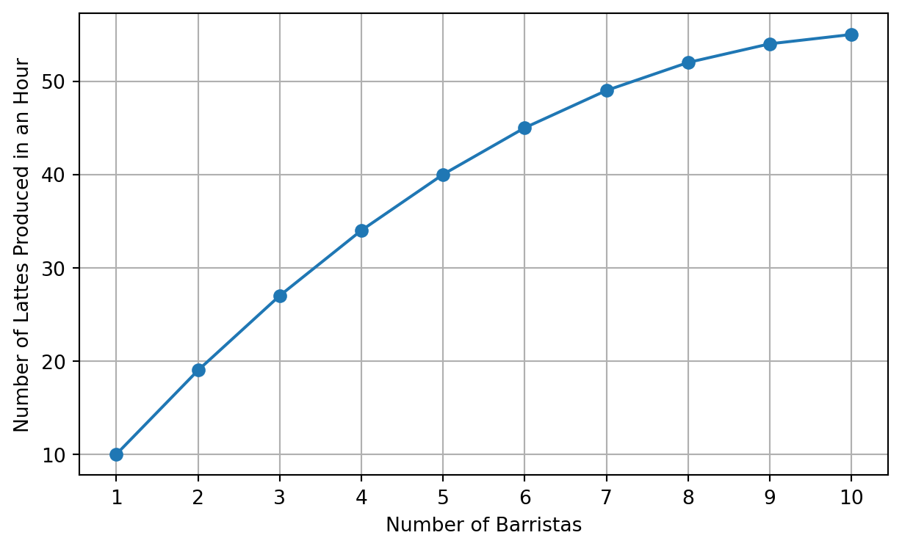
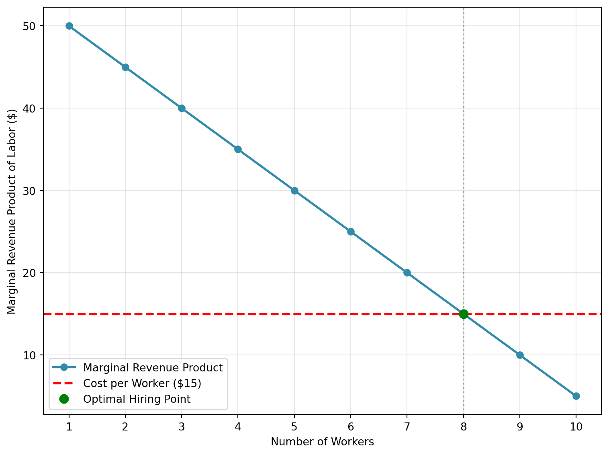
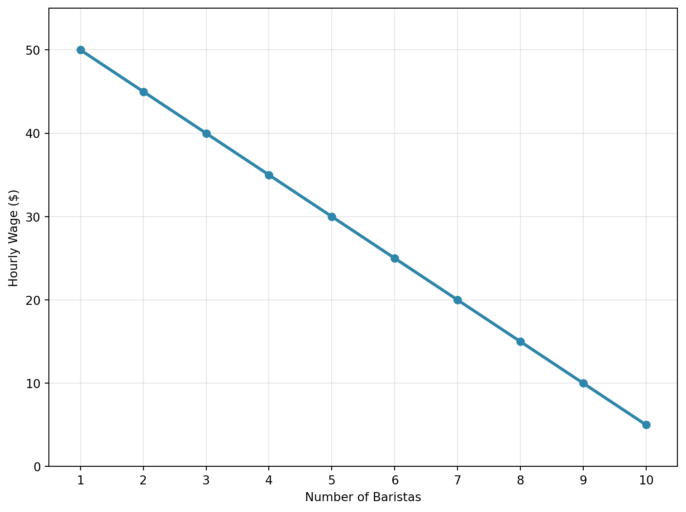
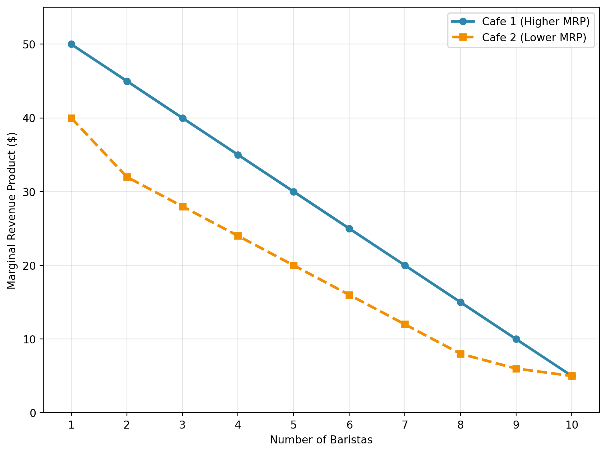
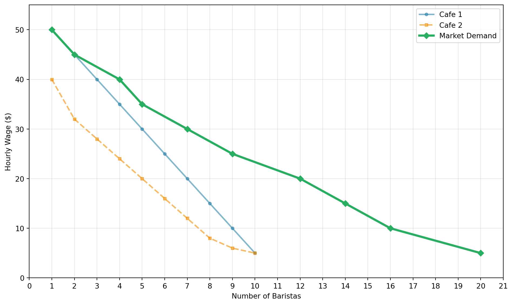
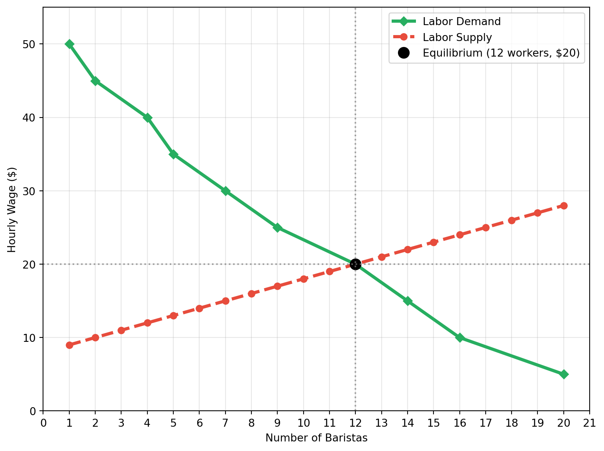

2 Perfect Competition
2.1 The Wage Level?
All of our big trends depend crucially the wage level. For the labor share of income, if wages go down, the the labor share of incomes will also go down, as the total amount of income paid to workers has decreases. Trends in inequality depend directly on the wages paid to different groups of workers. Labor force participation again depends on the wage level. If the wage level goes up, then more individuals will find it worthwhile to work, and the labor force participation rate will increase.
Therefore, understanding what determines the wage level will be a recurring theme throughout this course and book. In this section, we will first focus on a perfectly competitive model of the labor market, and in particular, consider how firms decide how many workers to hire and how much to pay them. This will be a valuable baseline for studying the potential impacts of technology on the labor market later in the course.
2.2 Definition of Perfect Competition
What does it mean for the labor market to be perfectly competitive? Let’s take the perspective of an individual firm. To make it even more concrete, let’s consider a specific case study: a cafe that is trying to hire barristas.
Imagine the cafe decides that they need to hire 7 barristas (we will come to how they make this decision in the next section). Well, what wage should they offer? In a perfectly competitive market, this decision is straightforward. The cafe will pay whatever the overall market wage is for barristas. The individual cafe has absolute no control over this.
Perfectly competitive models have some underlying assumptions. We are going to keep it as simple as possible in this course and understand the intuition behind these assumptions, rather than the formal mathematical definitions. The two key assumptions are (1) perfectly competitive models have a large number of workers and large number of firms and (2) there are no frictions for workers that make it costly to move between firms.
This “no friction between moving jobs” is central. What it means is that if a firm offers lower than the market wage, it will immediately lose all of its workers. To take the case of our cafe, if the market wage for barristas is $15 an hour and the cafe wants to hire 7 barristas, then if the cafe offers $14 an hour, it will not be able to hire any barristas. All of the barristas will immediately leave the cafe and go work for another cafe that is paying the market wage of $15 an hour.
Will the cafe ever decide to pay more than the market wage? No, because if it did, it would be paying more than it needs to. If the cafe offers $16 an hour, it will still be able to hire 7 barristas, but it will be paying $1 an hour more than it needs to. Throughout we will assume that firms are profit maximizers. This means the decisions of the firms will entirely be driven by whatever decisions maximize their total profits. In a perfectly competitive market, this means that firms will always pay the market wage.
The way this situation above is often described is that the firms are “price takers.” This means that they take the price of labor as given. They don’t actually choose the wage they pay to workers, this value is determined by the overall market. The firm can only choose how many workers to hire, and it will always pay the market wage for those workers.
This will be our starting point for understanding how the labor market works. You might think there are aspects of what we have assumed that don’t appear realistic to you. For example, when we said that if the cafe pays a dollar under the market wage, it will lose all its workers. In reality, there are firms that pay lower wages than other firms, and it’s not true that they have zero workers. To understand many aspects of the labor market, it will be important to relax these assumptions, and we will get to that in time. But for now, we will be able to make significant progress by starting with a perfectly competitive model.
2.3 Single-Input Production Function
In economics, the production function is a central concept. Firms, in essence, take inputs and produce some output. Apple takes in raw inputs like aluminum and silicon, and produces iPhones. Cafes take in inputs like coffee beans, milk, and barristas and then produce lattes. The production function is a mathematical representation of this process. To begin, let’s start with the simplest possible case: a production function with labor as the only input.
We will assume that the output produced by a firm \(Y\) is a function of the number of workers \(L\) that it employes: \[Y = f(L)\]
To make this more concrete, let’s again consider the case of our cafe. Let’s assume the cafe produces a single item: lattes. The number of lattes it can produce is a function of the number of barristas it employs. Let’s assume that if the cafe has 1 barrista, it can produce 10 lattes in an hour, it it has 2 barristas, it can produce 19 lattes in an hour, and so on. In the graph below the x-axis is the number of barristas and the y-axis is the number of lattes produced. This is a visual representation of the production function for our cafe.
Now the shape of the production function wasn’t an accident. For this production function, we have drawn, going from zero to workers to one worker increases the number of lattes produced by 10. But going from one worker to two workers increases the number of lattes produced by 9, and going from two workers to three workers increases the number of lattes produced by 8. With each additional worker, the number of lattes produced increases, but at a decreasing rate. This is called diminishing marginal returns.
In the case of our cafe, this makes a lot of sense. Maybe the coffee shop only has one espresso machine. If it hires a second barrista, then yes, you will likely see an increase in the total number of lattes produced, but there is still only one espresso machine. To take it to the extreme, imagine there are 100 barristas, but only one espresso machine. A lot of those barristas will probably just be standing around. So even though you have more workers, you don’t have any more output.
So when does the firm stop hiring barristas? What does it depend on? Well, for each worker, the firm must pay a wage. So let’s assume that the market wage for barristas is $15 an hour. Now, we need to compare the cost of hiring an additional worker to the additional output produced by that worker. The additional output produced by that worker is called the marginal product of labor. In our case, the marginal product of labor is the additional number of lattes produced by hiring one more barrista.
So going from 0 to 1 barrista, the marginal product of labor is 10 lattes. What is the value of these additional 10 lattes? Well, it depends on what these are selling for. Let’s assume that the cafe sells each latte for $5. Then the value of the additional 10 lattes is $50. Therefore, the marginal revenue product of labor is equal to $50. The marginal product of labor is how many additional lattes, while the marginal revenue product of labor is how much those additional lattes are worth in terms of revenue.
So the first decision is clear, the $50 in revenue from the first barrista is greater than the $15 cost of hiring that barrista, so the cafe should hire that barrista.
Now, what about the second barrista? The marginal product of labor is 9 lattes, and the marginal revenue product of labor is $45. Again, this is greater than the cost of hiring that barrista, so the cafe should hire that barrista as well. Instead of going through each additional barrista, let’s summarize the marginal revenue product of labor and the marginal revenue product of labor in a table:
| Number of Workers | Marginal Product (Lattes) | Marginal Revenue Product ($) |
|---|---|---|
| 1 | 10 | 50 |
| 2 | 9 | 45 |
| 3 | 8 | 40 |
| 4 | 7 | 35 |
| 5 | 6 | 30 |
| 6 | 5 | 25 |
| 7 | 4 | 20 |
| 8 | 3 | 15 |
| 9 | 2 | 10 |
| 10 | 1 | 5 |
Given this table, when does it make sense for the cafe to stop hiring barristas? Well, it should keep hiring barristas until the marginal revenue product of labor is less than the cost of hiring that barrista. In our case, the cost of hiring each barrista is $15. The marginal revenue product of labor is equal to or greater than $15 for the first 8 barristas, but for the 9th barrista, the marginal revenue product of labor is $10, which is less than the cost of hiring that barrista. Therefore, the cafe should hire 8 barristas.
It is often helpful to visalize this decision graphically. Below, we plot the marginal revenue product of labor and the cost of hiring each barrista. The point where the two lines intersect is the point where the cafe should stop hiring barristas.

2.4 Labor Demand Curve
So far, we have figured out the demand for the firm assuming the market wage is $15. A firm’s overall demand curve is the demand for any given wage \(L(w)\). Since we know the number of workers hired for a wage of $15 is 8, then \(L(15)=8\). To construct a firm’s demand curve, we can simply repeat the process above for different wages.
For example, if the hourly wage is $20, then the cafe will now hire 7 barristas. This is because the value of hiring the 7th barrista is $20, but the value of hiring the 8th barrista is $15. Therefore the cafe will hire 7 barristas.
Let’s repeat this process for a range of wages. Below we plot a table where we show for each wage, how many barristas the cafe will hire.
| Hourly Wage ($) | Number of Baristas Hired |
|---|---|
| 50 | 1 |
| 45 | 2 |
| 40 | 3 |
| 35 | 4 |
| 30 | 5 |
| 25 | 6 |
| 20 | 7 |
| 15 | 8 |
| 10 | 9 |
| 5 | 10 |
Now, let’s read through this carefully. When the hourly wage is $50, the cafe will hire 1 barrista. Before, what did we say the marginal revenue product of labor was for the first barrista? It was $50. This makes perfect sense. If the wage is $50, you will hire until the marginal revenue product of labor is less than the wage. So if the wage is $50, you will hire 1 barrista, because the marginal revenue product of labor for any following worker will be less than $50.
Next, we are going to plot this data in our figure. Note that when we think about the labor demand curve, the input is a given wage, and the output is a number of workers hired. Therefore, if we were to plot the demand curve, the wage would be on the horizontal axis and the number of workers hired would be on the vertical axis. However, because of some longstanding conventions in economics, we will actually plot the number of workers hired on the horizontal axis and the wage on the vertical axis. This is a bit counterintuitive, but it conforms to standard economic conventions. Because the wage is on the vertical axis, you will sometimes hear this curve referred to as the inverse labor demand curve. Whether you call it the labor demand curve or the inverse labor demand curve, it is the same concept, it tells you for each wage, how many workers will be hired.

One thing you might notice is that the labor demand curve looks exactly like the marginal revenue product of labor curve we plotted earlier. This is not a coincidence. The labor demand curve is exactly equal to the marginal revenue product of labor curve in perfectly competitive models of the labor market. This is because the firm will hire workers until the marginal revenue product of labor is equal to the wage. Therefore, for any given wage, the number of workers hired is determined by the marginal revenue product of labor.
One important conceptual point here that can get lost sometimes. The demand curve for labor is not literally the marginal revenue product of labor. The demand curve for labor is the relationship between the wage and the number of workers hired. The marginal revenue product of labor is the value of the additional output produced by hiring an additional worker. In a perfectly competitive market, these two are equal to each other. But if you deviate from the perfectly competitive model, then the demand curve for labor and the marginal revenue product of labor will not be equal to each other.
2.5 Market-level Labor Demand Curve
So far, we have figured out the demand for a single cafe. But what about the overall market? What is the demand curve for labor in the market?
To keep things simple, let’s first assume there are only two cafes. Our second cafe may now have the exact same production function as the first cafe. The layout of the cafe might be different, it might have different espresso machines. Therefore, the marginal revenue product of labor might be different.
Below, we show the marginal revenue product of labor for both the first and the second cafe. The first cafe is shown in blue, and the second cafe is shown in orange. As can be seen in the figure, the marginal revenue product of labor for the second cafe is lower than the first cafe. This means that the second cafe will hire fewer barristas at each wage level.

So how do we go from these marginal revenue product of labor curves to the overall market demand curve? Well, let’s start at a wage of 50. If the wage is 50, then the first cafe will hire 1 barrista, and the second cafe will hire 0 barristas. Therefore, at a wage of 50, the total number of barristas hired in the market is 1.
Let’s go down to a wage of 40. At a wage of 40, the first cafe will hire 3 barristas, and the second cafe will hire 1 barrista. Therefore, at a wage of 40, the total number of barristas hired in the market is 4.
Let’s continue this process for all the wages. Below, we show a figure that takes these two marginal revenue product of labor curves and combines them into a single market demand curve. The market demand curve is shown in green, and it is the sum of the two individual cafes’ demand curves. For example, you can see at the wage of 40, the green line is equal to 4, which is the sum of the 3 barristas hired by the first cafe and the 1 barrista hired by the second cafe.
At a wage of $5, both cafes would hire their maximum of 10 barristas each. Therefore, at a wage of $5, the total number of barristas hired in the market is 20.

The logic here that was applied for two cafes can be applied to any number of cafes. If there are 100 cafes, then we can simply sum the number of workers hired by each cafe at each wage level to get the overall market demand curve.
There are two key features that it is important to take away now that we’ve constructed the market demand curve. First, the market demand curve is downward sloping. This means that as the wage goes down, the number of workers hired goes up.
Second, the market demand curve is the sum of the individual firms’ demand curves. These demand curves are in turn determined by the marginal revenue product of labor. So when we think about how changes in the economy impact the wage level, it will be useful to think about how it impacts the marginal revenue product at a given firm. For example, if technology increases the productivity of every worker, then this will shift the MRPL curve for every firm. This will be important in considering how such shifts are expected to impact the wage level in the economy.
2.6 Labor Supply
Let’s take stock of what we know so far. For any given wage, we can figure out how many workers will be hired in the labor market overall. But what will the actual wage be? Will it be $15 an hour? $20 an hour? $50 an hour?
To determine this, we need to think about the other side of the market: the workers. Later in the book and course, we will dig into deeper concerning an individual’s choice to work. For now, we will make one simple and realistic assumption: there will be more workers in the labor market the higher the wage.
For our discussion of labor demand, we built up the demand curve for labor by considering how many workers individual firms would hire at each wage level. We can do the same thing for workers as well. Instead of maximizing profits, workers will be maximizing their utility. This means that they will choose to work if the wage is high enough to make it worth their time.
For now, we are not going to go through the details of how to construct the labor supply curve. Instead, we will simply assume that the labor supply curve is upward sloping. For example, let’s assume that the labor supply curve for barristas is the red dashed line given in Figure 2.6. This curve is upward sloping, meaning that as the wage increases, the number of workers willing to work also increases.

Now, what determines the market wage? Well, let’s see if a $10 wage is a market equilibrium. At a wage of $10, the labor demand curve tells us that firms want to hire about 16 workers. However, at that wage, only about 2 workers are willing to work. Therefore, the labor market is experiencing a shortage.
Is this an equilibrium? No, it’s not. In an equilibrium, the quantity of labor supplied equals the quantity of labor demanded. But why can’t there be a situation in which a shortage exists in equilibrium? We regularly hear about shortages in the news.
The reason in our setting that a shortage cannot exist is that the firms have an incentive to raise the wage. Let’s think back to our original cafe. If the wage is $10, then our original cafe would like to hire 9 workers. Clearly it will not be able to hire 9 workers, because only about 2 workers total are willing to work at that wage across the entire market. So what will the cafe do?
Well, it can increase the wage. Is this profitable to do? Let’s say the cafe raises the wage to $12, then it will attract workers from other cafes (remember we assumed perfect competition, so workers can move freely between cafes). At a wage of $12 it will also attract workers who were not working before. The marginal product of labor is still above the wage, so the cafe prefers this situation.
The equilibrium occurs when no firm has an incentive to change the wage. This occurs when the quantity of labor supplied equals the quantity of labor demanded. In our case, this occurs at a wage of $20 and 12 workers. In this case the first cafe wants to hire 7 workers and the second cafe wants to hire 5 workers, for a total of 12 workers.
Does either cafe have an incentive to change the wage? Let’s take cafe 1’s decision. If it raises the wage it will be able to attract more workers from cafe 2. But what is the marginal revenue product of the 8th worker? It is $15, which is less than the wage of $20. So if cafe 1 raises the wage, it will hire more workers, but it will be losing money on those additional workers. Therefore, it does not want to raise the wage. The exact same logic applies to cafe 2.
2.7 Summary
In this chapter, we explored the labor market through the lens of a perfectly competitive model. We began by understanding how individual firms determine the number of workers to hire and the wage to pay in order to maximize profits. Key to this decision is the concept of marginal revenue product of labor, which is the additional revenue generated from hiring one more worker.
We then aggregated the demand from individual firms to understand the market-level labor demand curve. This curve is derived from the marginal revenue product of labor curves of all firms in the market and shows the total number of workers hired at each wage level.
On the supply side, we made a simplifying assumption that the labor supply curve is upward sloping, meaning that higher wages attract more workers to the labor market.
Finally, we combined the labor supply and demand curves to find the equilibrium wage and quantity of labor in the market, where the quantity of labor supplied equals the quantity of labor demanded.
This framework provides a foundational understanding of how wages and employment levels are determined in a perfectly competitive labor market.